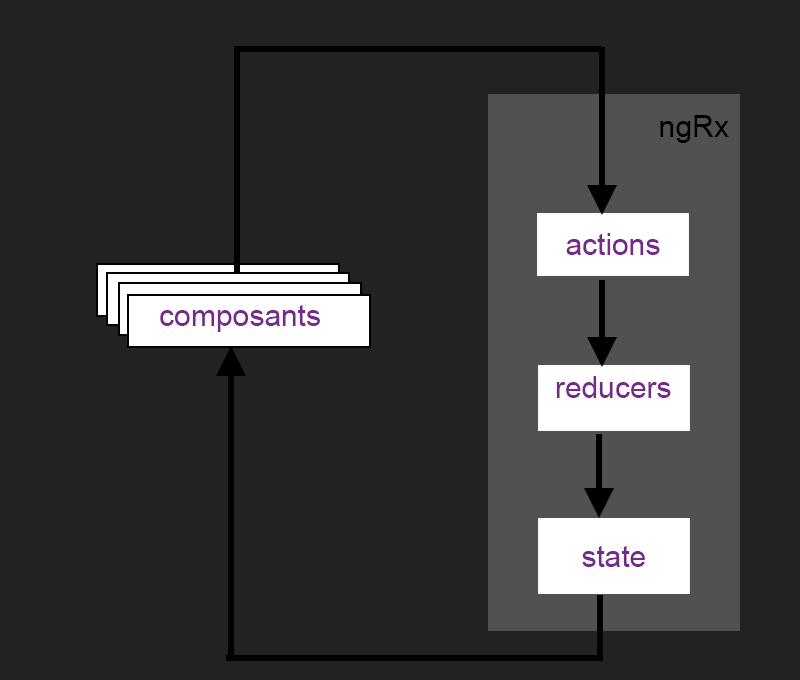
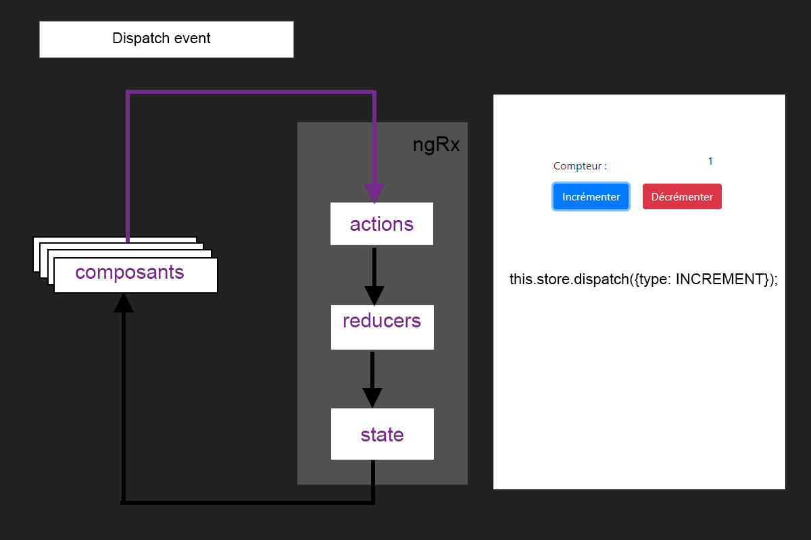
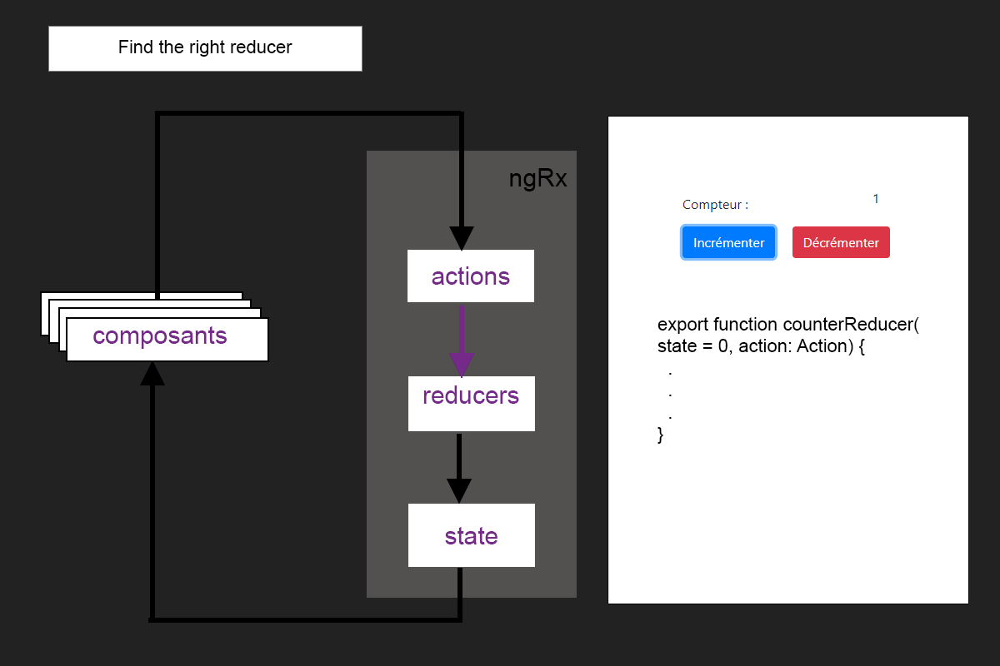
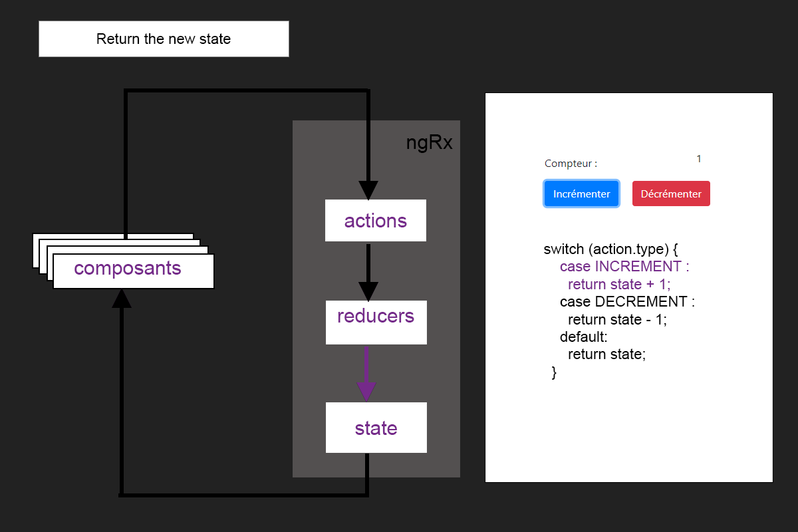
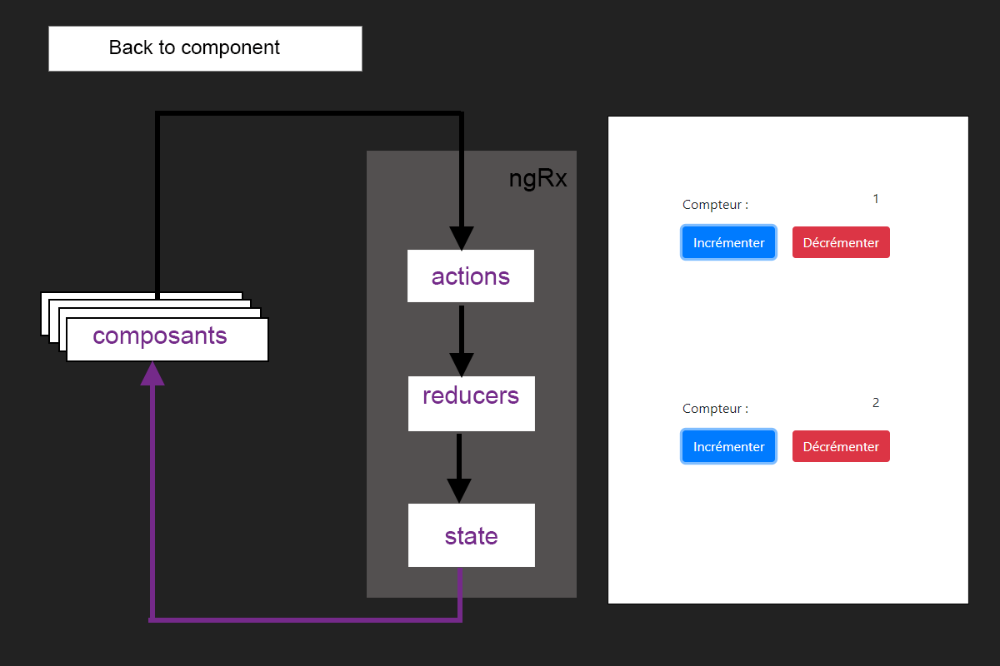

{
type: 'INCREMENT',
value: 1
}Angular & Ngrx

Ngrx
RxJS powered state management for Angular apps
inspired by Redux
History
Ngrx
Follows the three basic principles of Redux
Single source of truth
The state of your whole application is stored in an object tree within a single store.
ONE STORE TO SAVE THEM ALL
ONE STORE TO FIND THEM
ONE STORE TO BRING THEM ALL
State is READ ONLY
The only way to change the state is to emit an action.
Action : an object describing what happened.
Changes are made with pure functions
To specify how the state tree is transformed by actions, you write pure reducers.
(previousState, action) ⇒ newState
(1, INCREMENT) ⇒ 2
Ngrx
provides two main RxJs operators to work with the store
select : allows to select part of the global state as Observable
count$: Observable<number> = store.pipe(select('count'));ofType : allows to filter on a specific type of action
@Effect() authActions$ = this.actions$.pipe( ofType<LoginAction | LogoutAction>('LOGIN', 'LOGOUT'), tap(action => console.log(action)) );
Ngrx
is built for Angular framework
Integration into Angular is eased with Ngrx modules
StoreModule, EffectsModule, StoreDevtoolsModule
provide @ngrx/schematics to create blueprints files
ng generate store State --root --module app.module.ts --collection @ngrx/schematics
Ngrx
Ngrx example interactions





Ngrx Ecosystem librairies
@ngrx/schematics
allows to create @ngrx blueprints files : Store, Action, Reducer, Effect …
npm install @ngrx/schematics --save-dev
@ngrx/store-devtools
Awesome debug tool working with browser extension : Redux DevTools
npm install @ngrx/store-devtools --save
@ngrx/effects
@ngrx/effects provides an elegant way of handling side effects
npm install @ngrx/effects --save
@ngrx/router-store
Bindings to connect the Angular Router to @ngrx/store
npm install @ngrx/router-store --save
@ngrx/entity
Entity State adapter for managing record collections.
npm install @ngrx/entity --save
Ngrx Live coding
Redux pattern with Vanilla Js
Ngrx integration with Angular app
Focus on @ngrx/effects module
Angular lazy-loading and Ngrx
Organize your store with Normalizr
Undo/Redo functionality with redux-undo
Redux pattern with Vanilla Js
Vanilla JS is not a framework but simply means "naked Js", it’s JavaScript without a library.
Let’s code
Ngrx integration with Angular app
Prerequisites : angular application
npm install --save @ngrx/store
Let’s code
Focus on @ngrx/effects module
@ngrx/effects allows side effects handling
npm install @ngrx/effects --save
Let’s code
Angular lazy-loading and Ngrx
Lazy loading is when you load modules only when you need them.
Let’s code
Organize your store with Normalizr
Can you see the problem? :(
[{
"id": 1,
"title": "First Article",
"author": {
"id": 1,
"name": "David"
}
}, {
"id": 2,
"title": "Second Article",
"author": {
"id": 1,
"name": "David"
}
}]Is’nt better? :)
{
"articles": [{
"id": 1,
"title": "First Article",
"author": 1
},
{
"id": 2,
"title": "Second Article",
"author": 1
}
],
"authors": [{
"id": 1,
"name": "David"
}]
}